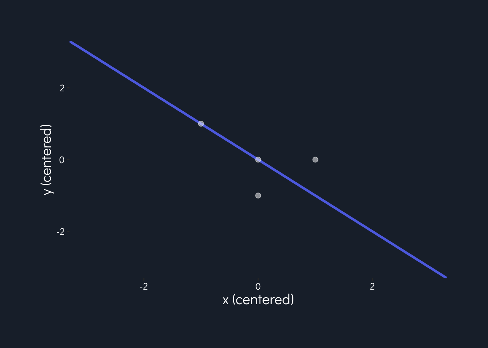

knitr::opts_chunk$set(echo = T, message = F, warning = F)# DO THESE FIRST BEFORE LOADING RETICULATE PKG
# create a new environment
# reticulate::conda_create("hw2")
#
# reticulate::conda_install("hw2", "numpy")
# reticulate::conda_install("hw2", "scipy")
#
# reticulate::use_condaenv("hw2")library(tidyverse)
library(reticulate) # to use Python
# Plotting aesthetics
loaded_font <- 'Didact Gothic'
text_color <- 'white'
# Hex codes
hex_purple <- "#5E72E4" #primary
hex_blue_lt <- "#5DCEF0" #info
hex_green <- "#63CF89" #success
hex_pink <- "#EA445B" #danger
hex_orange <- "#EC603E" #warning
hex_blue_dk <- "#172B4D" #default
hex_grey <- "#51535e"
hex_blue_deep <- "#0f151c"
proj_theme <- theme(plot.background = element_rect(fill = "#1e2936", color = "transparent"),
plot.margin = margin(t = "1.5", r = "1.5", b = "1.5", l = "1.5", unit = "cm"),
panel.background = element_rect(fill = "#1e2936"),
panel.grid.major = element_blank(),
panel.grid.minor = element_blank(),
plot.title = element_text(family = loaded_font, color = text_color, hjust = 0.5, face = "bold", size = 25),
plot.caption = element_text(family = loaded_font, color = text_color, size = 9),
axis.title = element_text(family = loaded_font, size = 15, color = text_color),
axis.text = element_text(family = loaded_font, color = text_color, size = 10),
strip.background = element_rect(fill = "#0f151c"),
strip.text = element_text(color = "#a1aab5", family = loaded_font, face = "bold", size = 18),
legend.background = element_rect(fill = "transparent"),
legend.title = element_text(family = loaded_font, color = text_color),
legend.text = element_text(family = loaded_font, color = text_color),
legend.position = "bottom",
legend.key = element_rect(fill = NA))What is the first principal component \(\omega_1\)? Draw the first principal component direction \(\omega_1\) on the plot, anchored at the origin.
(Step 1) Find the mean of the data.
\[ m = \frac{1}{4} \begin{bmatrix} 0 \\ 2 \end{bmatrix} \begin{bmatrix} -1 \\ 1 \end{bmatrix} \begin{bmatrix} -1 \\ 2 \end{bmatrix} \begin{bmatrix} -2 \\ 3 \end{bmatrix} = \frac{1}{4}\begin{bmatrix} -4 \\ 8 \end{bmatrix} = \begin{bmatrix} -1 \\ 2 \end{bmatrix}\]
(Step 2) Form the covariance matrix.
\[ \Sigma = \text{Cov}(X) = \frac{1}{n - 1}XX^T =\frac{1}{3} \begin{bmatrix} 1 & 0 & 0 & -1 \\ 0 & -1 & 0 & 1 \end{bmatrix} \begin{bmatrix}1 & 0\\ 0 & -1 \\ 0 & 0 \\ -1 & 1 \\ \end{bmatrix} = \begin{bmatrix} \frac{2}{3} & \frac{-1}{3} \\ \frac{-1}{3} & \frac{2}{3} \\ \end{bmatrix} \]
(Step 3) Conduct eigenanalysis.
\[\text{det}\begin{pmatrix} \frac{2}{3} - \lambda & \frac{-1}{3} \\ \frac{-1}{3} & \frac{2}{3} - \lambda \\ \end{pmatrix} = \left| \left(\frac{2}{3} - \lambda\right) \left(\frac{2}{3} - \lambda\right) - \frac{1}{3}\left(\frac{1}{3}\right) \right|\] \[\implies \frac{4}{9} - \frac{2}{3}\lambda - \frac{2}{3}\lambda + \lambda^2 = 0\] \[\implies \frac{3}{9} - \frac{4}{3}\lambda + \lambda^2 = 0\] \[\implies \frac{1}{3} - \frac{4}{3}\lambda + \lambda^2 = 0\]
\[\implies (\lambda - 1)(\lambda - \frac{1}{3}) = 0\] which gives us:
\[\omega_1 = \begin{bmatrix} -0.707 \\ 0.707 \\ \end{bmatrix}\]
w1 <- data.frame(x = c(-0.707, 0),
y = c(0.707, 0))
calc_slope <- function(x, y) {
rise = x[1] - x[2]
run = y[1] - y[2]
return(rise/run)
}
calc_intercept <- function(x, y) {
m <- calc_slope(x, y)
b <- y[1] - m * x[1]
return(b)
}
w1_slope <- calc_slope(w1$x, w1$y)
w1_int <- calc_intercept(w1$x, w1$y)
data <- data.frame(x = c(0, -1, -1, -2),
y = c(2, 1, 2, 3),
x_mean = -1,
y_mean = 2) %>%
mutate(x_ctr = x - x_mean,
y_ctr = y - y_mean)
ggplot() +
geom_abline(intercept = w1_int, slope = w1_slope, size = 1.2, color = hex_purple) +
geom_point(data = data, aes(x_ctr, y_ctr), color = "white", alpha = 0.5, size = 2.2) +
labs(x = 'x (centered)',
y = 'y (centered)') +
xlim(-3, 3) +
ylim(-3, 3) +
proj_theme